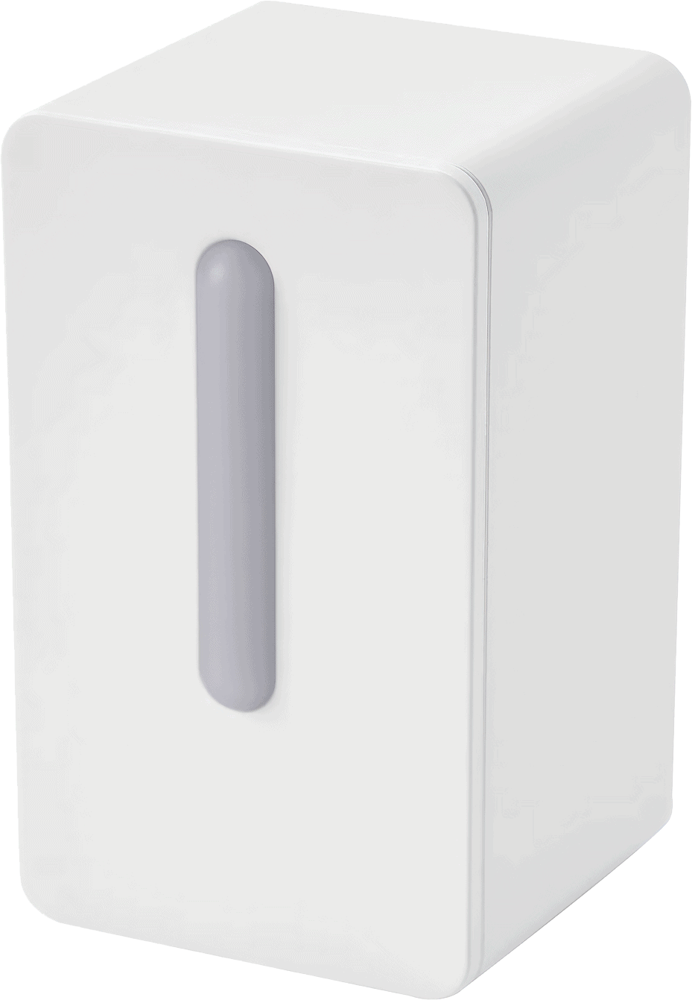

Hardware Modification
The IKEA Vindriktning device was opened and modified to integrate a D1 Mini ESP8266. Power and UART lines from the PM1006 particulate sensor were connected to the microcontroller.

Open‑hardware air quality monitor created by modifying the IKEA Vindriktning and integrating an ESP8266 running ESPHome firmware. The project transforms a simple particulate sensor into a smart IoT environmental monitoring device integrated with Home Assistant.
Explore Features
AirSense began as a hardware reverse‑engineering experiment of the IKEA Vindriktning air quality monitor. By integrating a D1 Mini ESP8266 inside the enclosure, the PM1006 particulate sensor can now transmit live environmental data to a home automation network.
ESPHome firmware provides WiFi connectivity, OTA updates, and seamless Home Assistant integration.
The built‑in PM1006 particulate sensor communicates via UART and reports PM2.5 concentration levels.
An analog channel reads the ambient brightness level inside the device enclosure.
WiFi signal strength, device uptime, heap memory, IP address and status sensors are exposed.
Uses the internal PM1006 laser particle sensor to measure particulate matter concentration.
Analog input converts voltage values into a brightness percentage.
Detects internal fan activity to determine when the sensor is actively sampling air.
Device firmware can be updated wirelessly without opening the enclosure.
Provides WiFi signal strength, connection status, IP address and network data.
Reports uptime, ESP8266 internal temperature and available heap memory.
Provides particulate matter concentration used for indoor air quality monitoring.
Analog brightness reading derived from voltage on the A0 input.
Reports WiFi signal strength converted into percentage.
Internal microcontroller temperature used for monitoring device health.
Shows available memory of the ESP8266 runtime environment.
Reports how long the device has been running since last restart.
Trigger ventilation, air purifiers or alerts based on indoor air quality.
Store long‑term air quality data in Home Assistant dashboards.
Monitor pollution levels caused by cooking, dust or outdoor pollution.
Demonstrates how consumer electronics can be reverse engineered and extended.
The IKEA Vindriktning device was opened and modified to integrate a D1 Mini ESP8266. Power and UART lines from the PM1006 particulate sensor were connected to the microcontroller.
AirSense integrates with Home Assistant dashboards for real‑time environmental monitoring.

| Component | ESP8266 Pin | Description |
|---|---|---|
| PM1006 UART RX | D2 (GPIO4) | Receives particulate sensor data |
| I2C SDA | D6 (GPIO12) | I2C data line reserved for expansion |
| I2C SCL | D5 (GPIO14) | I2C clock line reserved for expansion |
| Fan Status | D4 (GPIO2) | Detects internal fan operation |
| Light Sensor | A0 | Analog brightness measurement |
| Power | 5V / GND | Powered from internal supply |
Add an I2C CO₂ sensor such as SCD40 to provide full indoor air quality monitoring.
Integrate sensors like BME280 or SHT31 for environmental data expansion.
Add an OLED display to show real‑time air quality metrics.
Migrate hardware to ESP32 for Bluetooth proxy support with Home Assistant.
Complete firmware, hardware documentation and build instructions are available on GitHub.
View GitHub RepositoryThis project is published strictly for educational purposes related to hardware reverse engineering and embedded systems learning. It is not affiliated with or endorsed by IKEA. The intention is not to harm or misuse any product ecosystem. If you believe this content is inappropriate, please contact the author for review or removal.